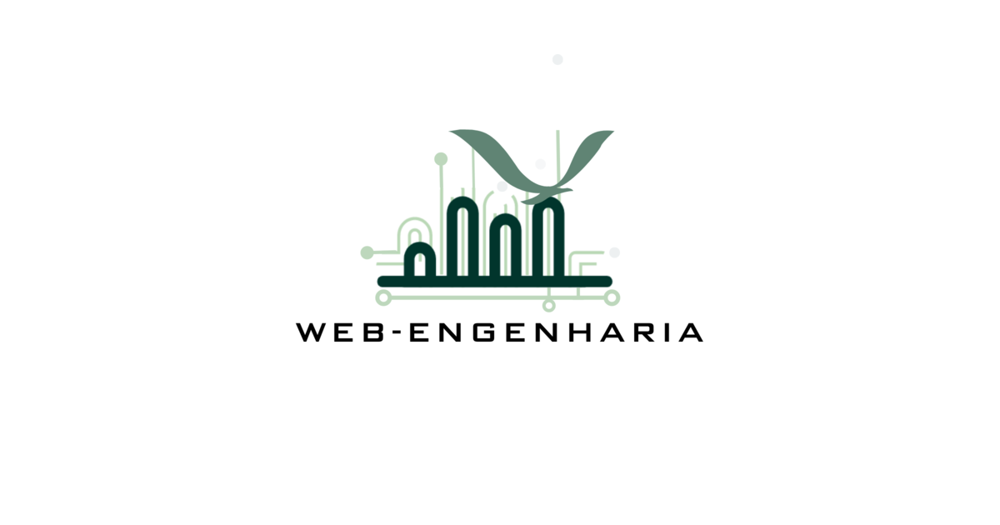

スタッフアグメンテーション
目標達成をサポートする最適なチームを特定します。
チームが需要で過負荷になり、納期に影響が出ている場合があります。最善のアプローチは分割統治です。チームに特定の目標に集中させ、新機能、拡張、保守などを当社に任せてください。
開発チームが確立されている企業に最適。

ソフトウェア開発者として、優れたコードだけでなく、すべてのクライアントに真の価値を提供するコードを届けることに努めています。本番環境で優れたWebアプリケーションを運用するだけでなく、ソフトウェアプロセスと品質保証も改善します。
統合に適用されるエンジニアリング： バージョン管理された契約、冪等性パターン、最初のスプリントからのオブザーバビリティ — 規制環境と高負荷に対応。
API-first
契約設計
4フェーズ
診断からサポートまで
明確なアーキテクチャでシステムとデータを統合し、統合をビジネスにとってアクセス可能で有用かつリスクの低いものにします。
回復力があり、適切にガバナンスされた統合が機会を広げ、技術リスクを軽減し、継続的な運用を維持する世界。
リモートファースト、目的を持つエンジニアリング。私たちの最大の製品は人です：才能、透明性、成長を重視しています。
Google、Ericsson、Metaなどの企業の実践と公式声明に触発されています。
チーム強化、フルプロジェクト、またはキャパシティビルディングなど、お客様のコンテキストに最適なモデルを特定します。
目標達成をサポートする最適なチームを特定します。
チームが需要で過負荷になり、納期に影響が出ている場合があります。最善のアプローチは分割統治です。チームに特定の目標に集中させ、新機能、拡張、保守などを当社に任せてください。
開発チームが確立されている企業に最適。
当社チームがプロジェクトの全開発を担当します。
コスト見積もりと納期予測を提供し、アジャイルのベストプラクティスで実装に取り組みます。スコープは可変で、頻繁に何を構築すべきか再評価するため、プロジェクト終了時に本当に必要なソフトウェアを得られます。
社内開発チームがない企業に最適。
目標達成に必要なことをより良く理解できるようサポートします。
プロジェクト開発を支援する熟練プロフェッショナルのチームを提供します。他の言語やテクノロジーで成長できるプログラミングコースも提供しています。
他の言語のスキルを開発したい企業や個人に最適。
コンテキストに応じた柔軟性：時間単価、固定価格、リテイナー、成功報酬、特別ケース。
勤務時間に応じた請求。Time & Materials、可変スコープと探索的スプリントに最適。
最適：需要が予測困難なプロジェクトや発見フェーズ。
スコープとスケジュールが定義された固定料金。クライアントとコンサルタント双方に予測可能性を提供。
最適：明確に定義されたスコープと要件の低い変動性。
PMO as a Serviceまたは継続的コンサルティング。定期的な利用可能性と予測可能な収益。
最適：継続的ガバナンス、進化する統合、定期的なサポート。
目標に連動した報酬。事前定義された目標達成時に成功報酬を支払い。
最適：測定可能なROIとウィンウィンの取り組みがあるプロジェクト。
段階的な株式参加。長期パートナーシップのためのcliffとカレンダー付き株式。
最適：初期スタートアップ、CTO、戦略アドバイザー。
社会的インパクト、ESGの取り組み、コミュニティのキャパシティビルディングのためのボランティアまたは補助業務。
最適：NGO、インパクトイニシアチブ、戦略的取り組みポートフォリオ。
モデルの組み合わせ：リテイナー+成功報酬、時間単価+ベスティング、成熟度とプロファイルに応じて。
最適：商業的柔軟性と当事者間のリスクアラインメント。
4つの柱による統合とAPI-firstアーキテクチャ、さらにプロジェクトマネジメントとITガバナンスコンサルティング — 各ブロックが技術力をビジネス成果に変換します。
システムと契約のマッピング；非機能要件（レイテンシ、冪等性、回復力）；パターン（APIゲートウェイ、メッセージング、CDC）。目標：本番での手戻りと驚きを減らす。
コネクタ、REST APIとイベント、オーケストレーションとオンデマンドiPaaS、ETLとストリーミング。目標：ビジネスに合わせてスケールするデリバリー。
統合のSLI/SLO、モニタリング、ランブック、ベンダーと社内チーム横断のインシデント管理。統合をプロダクトとして扱います — 孤立したスクリプトではありません。
OAuth/OIDC、シークレット、該当時はmTLS、生きたドキュメント（OpenAPI、イベントカタログ）、監査証跡。セキュリティとコンプライアンスは設計段階から、後付けではありません。
OPM3とITILによる成熟度評価。プロセスと有効性の監査（コンプライアンスだけでなく）。成果物：ギャップと進化ロードマップを特定した改善プログラム。
プロジェクトオフィス実装（PMO Lite〜Full、またはアジャイル）。戦略的優先順位付け、EVM、イニシアチブ選定。パフォーマンスメトリクス、ダッシュボード、PMO as a Service。
インシデント、変更、問題、資産管理（CMDB）。プラットフォーム実装（ServiceNow、Jira SM、GLPi）、セルフサービスポータル、自動承認ワークフロー。
コンテキストに応じたウォーターフォール、Scrum、Kanban、ハイブリッドモデル。EVM、CAPEX/OPEX管理、調達と契約。産業リスク管理を伴うエンジニアリングとインフラプロジェクト。
応用人工知能の能力：モデルをシステムに統合することから、コンピュータビジョン、カスタマイズトレーニング、エビデンスベースの意思決定のためのデータ分析まで。
AIモデルを既存システム（ERP、CRM、データ）に接続するAPI、イベント、オーケストレーション；エッジでのパイプラインとデータガバナンス。
検出、分類、画像/動画分析ソリューション；産業ユースケース、品質、運用に合わせたモデル。
MLパイプライン設計（データ、フィーチャーストア、トレーニングと評価）；ビジネス固有のシナリオ向けのファインチューニングと最適化。
データ探索、クレンジング、モデリング；ダッシュボード、レポーティング、エビデンスベースの意思決定；ML/AIの準備。
マッピング、アーキテクチャ、実装を提供した統合プロジェクト — 測定可能な成果とともに。
モダンAPIのないレガシーシステムが新ゲートウェイの採用を阻んでいました。安定した契約、段階的移行、トランザクション冪等性を備えたRESTレイヤーを提供しました。
8週間でゴーライブ；最初の30日間で重複インシデントゼロ。
複数チャネル（店舗、マーケットプレイス、POS）が在庫同期で失敗。フローをマッピングし、非同期イベントを設計、フォールバックと設定可能なリトライを備えたオーケストレーションを実装しました。
本番稼働2ヶ月後、在庫差異80％削減。
クライアントはインテグレーターとホワイトラベル向けに安定したAPIを公開する必要がありました。既存サーフェスの評価、OpenAPIドキュメント、バージョンガバナンスを実施。
定義されたSLAで6週間でパートナープログラム開始。
Web-Engenhariaは新フェーズの開始を正式に発表します。堅牢な社内ソリューションを開発しており、本番検証後、最大2年間の商用製品としてローンチします。このサイクル後、プロジェクトはオープンソースとしてリリースされ、他社がコミュニティサポート付きでサービスとして提供できるようになります。
すべてのプロジェクトはOpen Telecom Platformの原則に従います — エンジニアリングとプロダクトがともに歩みます。
Radix UIとShadCNに触発されたElixir向けHEExコンポーネントライブラリ。全製品に統一されたモダンで再利用可能なルック。
Web-Engenhariaのソフトウェアエンジニアを管理する社内システム。再利用可能なモジュール：認証、ドキュメントアップロード、勤怠管理、チーム、プロジェクト。
カード発行から決済処理までの完全なバンキングプラットフォーム。8つの伝統的銀行と8つのブラジルデジタル銀の経験に基づいてモデル化。銀行市場を内側から理解する人々が構築。
Web-Engenharia社内専用に開発されたAI。コラボレーションプラットフォームと統合。このプロジェクトは商業化されません；私たちの差別化は内側から始まります。
グループ旅行の管理・コントロールのためのプラットフォーム。
ERP、モバイルデジタルスーパーアプリ（ショッピング、配達、銀行カード）、POSと決済処理機の統合。
Web-Engenhariaは開発者によって作られています。私たちのポートフォリオは自らの才能 — 知的財産、肖像権、各チームメンバーのプロフェッショナルな評価への配慮を伴います。
共有するイノベーション。目的を持つエンジニアリング。Web-Engenharia — 未来は一人で築くものではないから。
発見から運用まで、明確なマイルストーンと段階的デリバリーで。
コンテキストの整合、システムとリスクの棚卸；測定可能な成功基準の定義。
API-first設計、同期とイベントフローの比較、疎結合、データ戦略。
必要に応じた概念実証；最初からテストとオブザーバビリティを伴う段階的デリバリー。
計画されたカットオーバー、文書化された引き渡し、継続運用契約。
お客様のコンテキストでこのジャーニーを確認しませんか？ 相談を予約
データとプロセスがすでに存在する場所で作業します：クラウド、ERP、決済、デジタルチャネル。第三者のロゴは許可と各ブランドのガイドラインに従ってのみ使用。
ドメインの要求に応じて、公開API、webhook、キュー、バッチフローで統合 — 常にバージョン管理された契約と本番の可視性とともに。
モダナイゼーションとレガシーの共存は典型的なスコープの一部です。Open Financeや規制された取り決めへの言及は、クライアントの法務助言に代わることなく、統合技術レイヤーとして扱われます。
コンテキスト（関係するシステム、緊急度、制約）を簡潔に説明してください。次のステップと、必要に応じて調整の電話でお返事します。